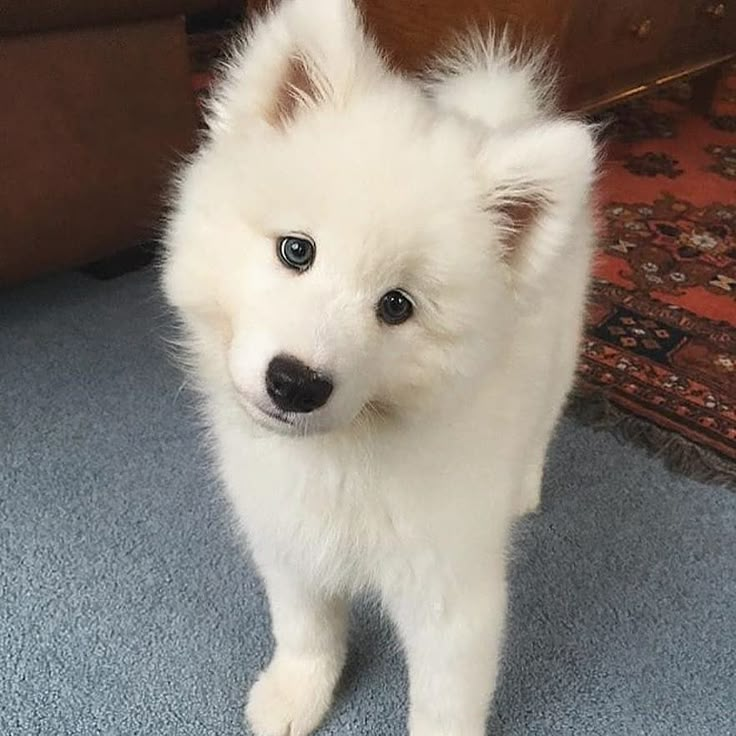

Nuestra misión es rescatar animales en condición vulnerable, otorgarles cuidados, cariños, asignarlos a un hogar responsable.
Aspiramos a crear una comunidad donde cada animal se sienta tranquilo, feliz, apoyado y que sienta que tiene un hogar al que pertenecer.